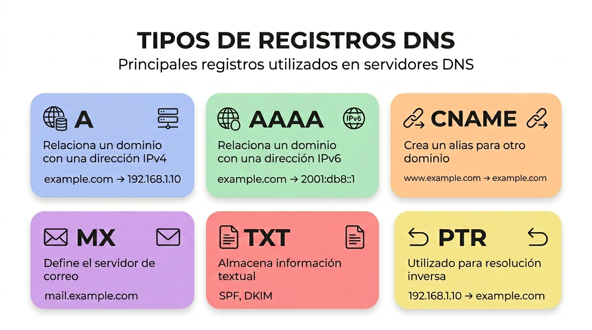

Tipos de registros DNS
Existen diferentes tipos de registros DNS, según su utilidad.
Registro A
Relaciona un dominio con una dirección IPv4.
Ejemplo:
example.com → 192.168.1.10
Registro AAAA
Relaciona un dominio con una dirección IPv6.
Ejemplo:
example.com → 2001:db8::1
Registro CNAME
Define un alias para otro dominio.
Ejemplo:
www.example.com → example.com
Registro MX
Indica los servidores encargados del correo electrónico.
Ejemplo:
mail.example.com
Registro NS
Define los servidores DNS autoritativos del dominio.
Registro TXT
Permite almacenar información textual.
Suele utilizarse para:
- SPF
- DKIM
- Verificación de dominios
Registro PTR
Se utiliza para resolución inversa.
Ejemplo:
192.168.1.10 → example.com

Ejemplo de zona DNS
example.com. IN A 192.168.1.10
www IN CNAME example.com.
mail IN MX 10 mail.example.com.
Importancia de los registros DNS
Los registros DNS permiten:
- Publicar páginas web.
- Gestionar correo electrónico.
- Organizar dominios.
- Configurar servicios de red.